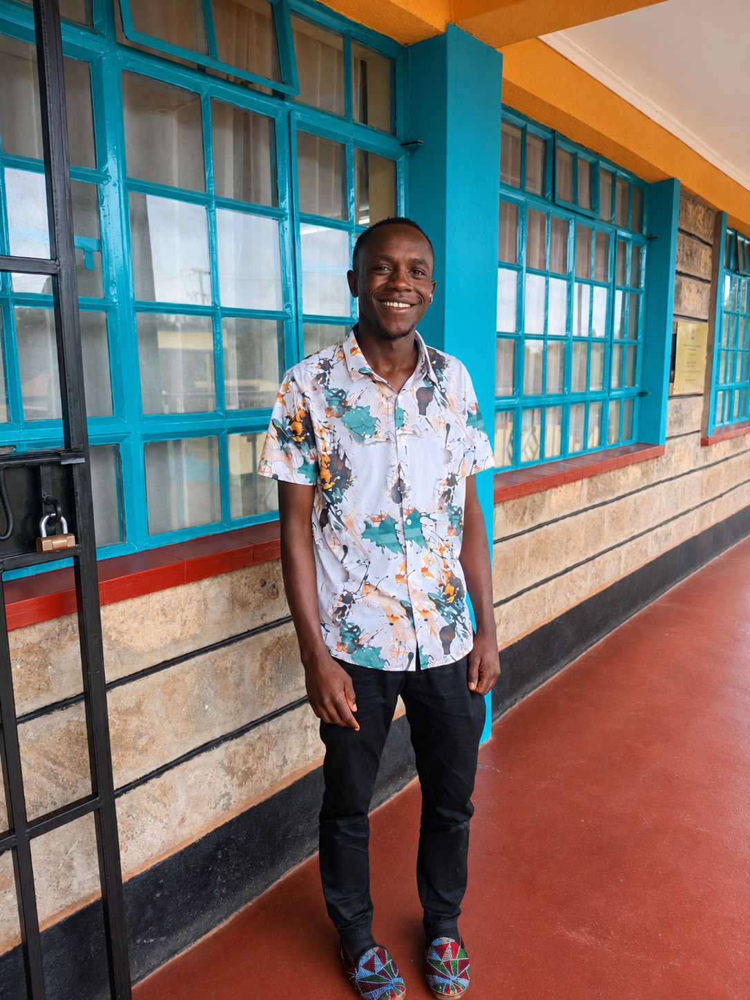

Web Development
Learning to build responsive webpages using HTML5,CSS and Javascript.

John munene is an ICT student passionate about web development,technology and solving real world problems using technology
I'm learning and turning ideas into working project.
My name is John Munene and am a Diploma in ICT student at Manyatta Technical and Vocational College. My journey in technology is driven by curiosity,creativity and the desire to keep learning.
I am developing my skils in web development,programming,computer networking and database management.I enjoy experimenting with code and understanding how systems work and turining ideas into practical projects.
My goal is to grow into a skilled ICT proffesional build useful digital solutions and use my knowledge to create opportunities for myself and others.
I am contiously developing my technical skills through coursework,practice and personal projects.
Learning to build responsive webpages using HTML5,CSS and Javascript.
Practicing programming fundamentals,variables,functions,conditions and problem solving.
Studying network design,network management and CCNA.
Learning about database models,normalization,querries,reports and databse testing
Manyatta Technical and Vocational College
Currrently developing knowledge in programming,web application development,networking,databases and system analysis and sesign.
Outside the classroom, I enjoy music,personal development,learning new things and exploring ideas that challenge me to grow.
I also like skating,cycling and watching movies and series.
I believe in consistency,discipline,curiosity and willingness to learn are essential for a better future.
Having a project idea an opportunity or an intrest in working together? i'd be happy to connect and explore what we can build.
EMAIL ME: munenej834@gmail.com